Cap. 16 Regressão linear simples
Objetivos do capítulo
1. Apresentar o modelo de regressão linear, especialmente a regressão linear simples
2. introduzir conceitos analíticos subjacentes à esta modelagem
3. Apresentar a utilidade desta modelagem em uma pesquisa
4. Demonstrar algumas equivalências entre modelos de regressão e outros testes estatísticos
GLOSSÁRIO
Modelo Linear Geral (GLM): Família de modelos estatísticos que permite verificar o relacionamento entre uma variável dependente (Y) contínua e variáveis independentes (X) contínuar ou não
intercepto (\(b_0\)): Valor previsto (médio) de Y quando X = 0
Inclinação (\(b_i\)): Diferença média em unidades da variável dependente quando se altera uma unidade de X
SSR: Soma dos Quadrados da Regressão
SSE: Soma dos Quadrados dos Erros
SST: Soma dos Quadrados Total
Coeficiente de Determinação (\(R^2\)): Porcentagem de variação da variável dependente (Y) que pode ser atribuída à variabilidade da(s) variável (is) independente(s) (X)
Coeficiente de Determinação ajustado (\(R^2_{adj}\)): Coeficiente que pondera o \(R^2\) pelo número de variáveis explicativas e pelo número de observações da amostra. É particularmente útil quando deseja-se comparar modelos de regressão múltipla para mesma variável dependente, pois penaliza aquele modelo com maior número de variáveis independentes
Modelos de regressão são modelos estatísticos que visam predizer o comportamento de uma variável dependente (Y) como uma função de uma ou mais variáveis independentes (X). Eles são integrantes da família de Modelos Lineares Gerais (GLM)
Em larga escala, eles substituem os outros testes paramétricos vistos até agora. Dessa maneira, quase tudo o que foi visto durante os capítulos anteriores são casos especiais de modelos de regressão (Chartier & Faulkner, 2008).
Existem diferentes nomenclaturas utilizadas para classificar tais modelos e a tabela abaixo apresenta uma classificação funcional.
| VI e VD | VD Discreta | VD Contínua |
|---|---|---|
| VI Discreta | Reg. logística | Reg. linear (Teste T/ANOVA) |
| VI Contínua | Reg. logística | Reg. linear |
Algumas conclusões são possíveis:
- A variável dependente irá definir se a regressão será linear ou logística. Quando a VD é continua (ex: peso, tempo de resposta, inteligência) trata-se de uma regressão linear. Quando a VD é discreta ou categórica (ex: acidente - sim ou não; orientação política - direita ou esquerda) trata-se de uma regressão logística.
- Caso haja uma única VI, a regressão é chamada de simples. Com duas ou mais VIs, ela é chamada de múltipla.
- Se houver mais de uma VD, o modelo será chamado de multivariado (em inglês, path analysis).
- Teste T e ANOVA são casos de regressão linear simples.
- ANCOVA, ANOVA de k vias e ANOVA fatorial são casos de regressão múltipla.
- O qui-quadrado pode ser aproximado pela regressão logística simples e vice-versa.
Isso posto, a Regressão linear é uma técnica estatística que permite estimar o quanto os valores de uma variável dependente (Y) variam em função de uma ou mais variáveis independentes (X). Isso é feito através de uma equação específica e há, ao menos, duas utilidades diretas em uma pesquisa, que são:
- Predizer os valores da variável dependente (Y) em função dos valores da variável dependente (X);
- Explicar a variabilidade da variável dependente (Y) em função da variável independente (X).
Ambas as utilidades são virtualmente iguais e como a Regressão linear simples pode ser vista a partir de um incremento ou avanço dos modelos de correlação, os aspectos correlacionais devem (e podem) ser inicialmente investigados.
Pela abrangência dos modelos de regressão, é possível tanto encontrar cursos completos e detalhados sobre suas características, como abordagens mais pragmáticas e operacionais voltadas a implementação deles em pesquisas. Nesse capítulo, o foco será dado na capacidade operacional.
Conceitualmente, a regressão linear simples é apresentada como:
\[y_i = b_0 + b_1X{_1}_i + \epsilon_{i}\]
Onde:
\(y_i\) representa a variável dependente
\(b_0\) é o intercepto (coeficiente linear)
\(b_1\) é a inclinação (coeficiente angular)
\(\epsilon_{i}\) é o erro/resíduo
A interpretação dos resultados obtidos depende dos seguintes pressupostos:
- A relação entre as variáveis é linear
- Os resíduos são independentes
- Os resíduos são normalmente distribuídos (com média)
- A variância dos resíduos é constante
O mnemônico LINE talvez ajude a lembrar destes pressupostos. Ele se refere à linearity, independence, normality e equal variance.
16.1 Breve explicação conceitual
Conforme descrito, modelos de regressão conseguem substituir a maior parte dos testes estatísticos realizados para testar hipóteses. Neste sentido, a maior parte dos livros tenta fazer uma introdução a estes modelos de forma que tanto aspectos conceituais, como algumas características analíticas possam ser melhor entendidas. Nesta seção, essa apresentação será feita de uma forma mais intuitiva. Caso você queira pular esta seção e ir direto à pesquisa, não há problema.
Inicialmente, se pensarmos que as variáveis da pesquisa podem ser representadas por conjuntos, é possível imaginar que tanto Y como X são independentes. Neste sentido, a realização de Y não dependente da realização de X e vice-versa.
No entanto, isso não é o que costuma ocorrer. Na verdade, com muita frequência, existe algum grau de relacionamento entre as variáveis, tal como exposto abaixo.
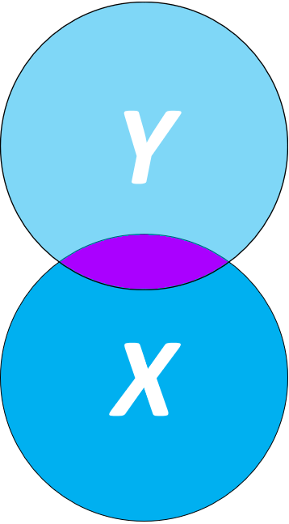
Caso se assuma que X é um fator de causalidade à realização de Y, isso significa que uma parte da realização de Y, necessariamente, depende de X. Tecnicamente, é isso que faz com que X seja chamada de variável independente e Y variável dependente. A área de intersecção destacada representa a parte de Y que pode ser atribuída ou explicada por X.
Analiticamente, essa área passará por algumas transformações algébricas e receberá o nome de Soma dos Quadrados da Regressão (SSR, em inglês).
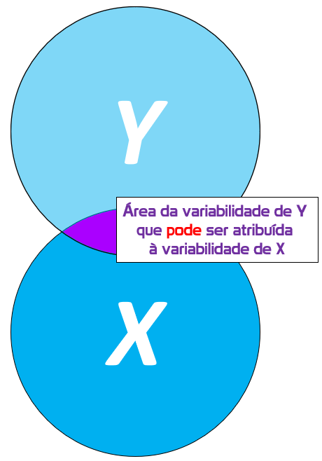
No entanto, nem toda a variabilidade de Y pode ser atribuída à X. Essa região de Y que está fora da intersecção também sofrerá transformações algébricas e será chamada de Soma dos Quadrados dos Erros (SSE, em inglês).
Essa área representa a variabilidade de Y que não pode ser atribuída ou explicada por X.
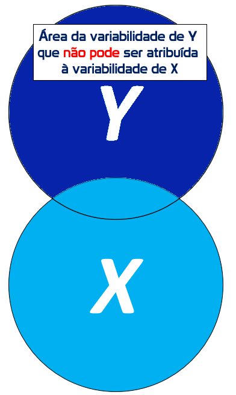
Agora, tecnicamente Y existe independentemente de X e possui uma variabilidade ou dispersão interna. Essa variabilidade é bastante próxima do conceito de variância visto em estatística descritiva e pode ser obtida pelo somatório da área explicada pela regressão (SSR) com a área não explicada (SSE).
Essa região total também passará por transformações algébricas e será chamada de Soma dos Quadrados Total (SST, em inglês).
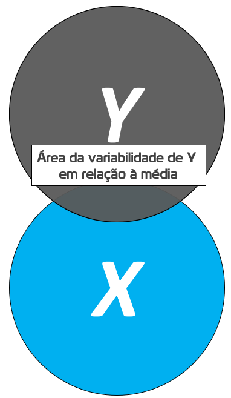
Vendo todas as partições de uma única vez, temos o seguinte:
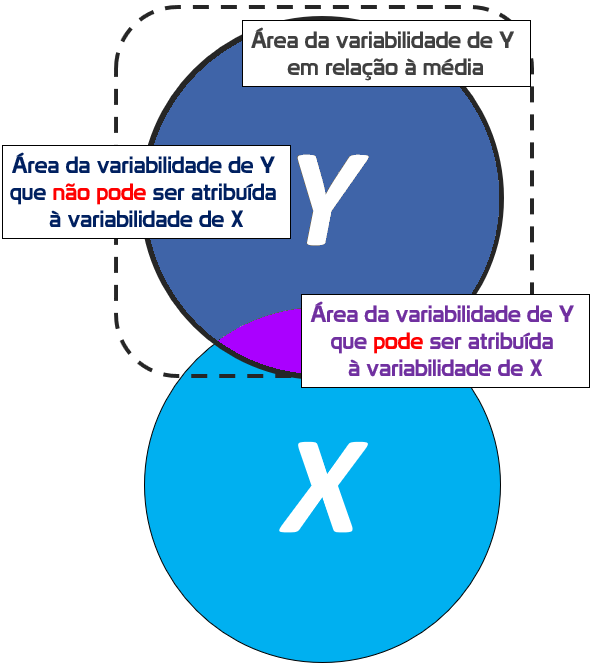
A porcentagem de variação de Y que pode ser atribuída à variabilidade de X é uma razão entre a Soma dos Quadrados da Regressão (SSR) e a Soma dos Quadrados Total (SST). O coeficiente obtido por essa razão recebe o nome de Coeficiente de Determinação ou \(R^2\), e indica a porcentagem de variação de Y que pode ser atribuída à variabilidade de X.
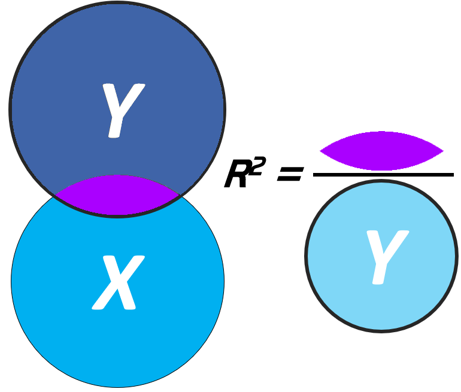
Isso é equivalente a subtração do espaço máximo de variabilidade (1 ou 100%) pela razão entre a Soma dos Quadrados dos Erros (SSE) e Soma dos Quadrados Total (SST):
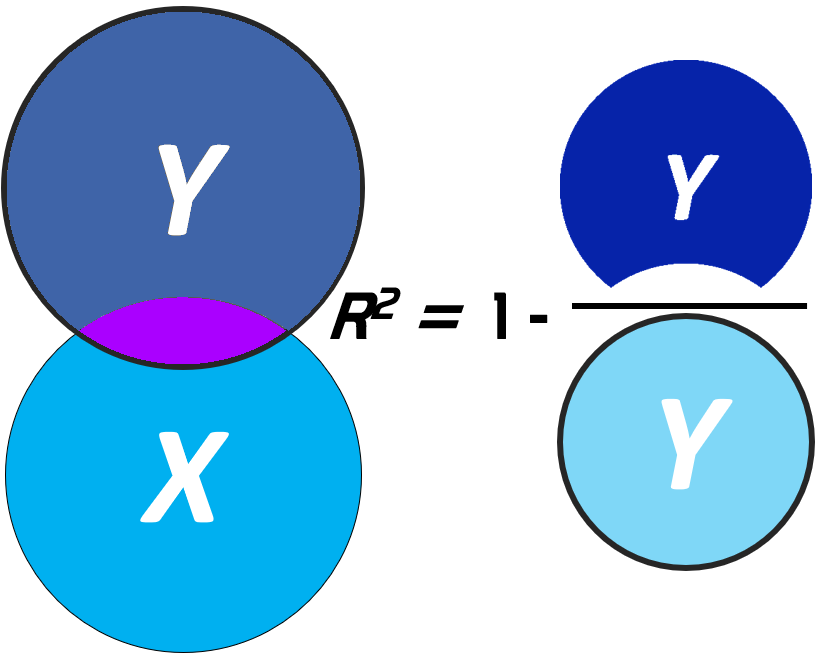
Evidentemente, essa explicação conceitual conta apenas uma parte da estória. É igualmente possível entender os modelos de regressão a partir da ampliação de uma análise de correlação. Por exemplo, se duas variáveis aleatórias contínuas são correlacionadas de maneira linear e positiva, tal como demonstrado abaixo:
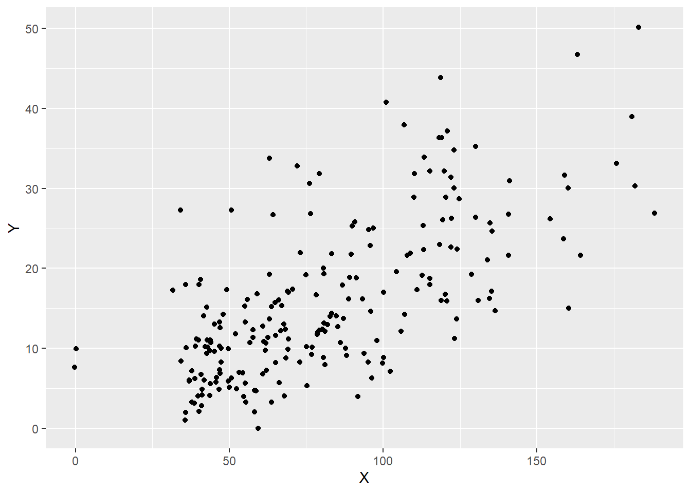
É possível verificar quanto os valores de Y podem ser atribuídos à X a partir de um modelo estatístico. Este modelo irá computar uma função para ajustar uma reta bem próxima aos pontos reais. Tecnicamente, quão mais próximo essa reta estiver dos pontos, melhor ajustada ela estará e, consequentemente, menor os erros serão. No entanto, muitas retas podem ser traçadas, tal como demonstrado a seguir.
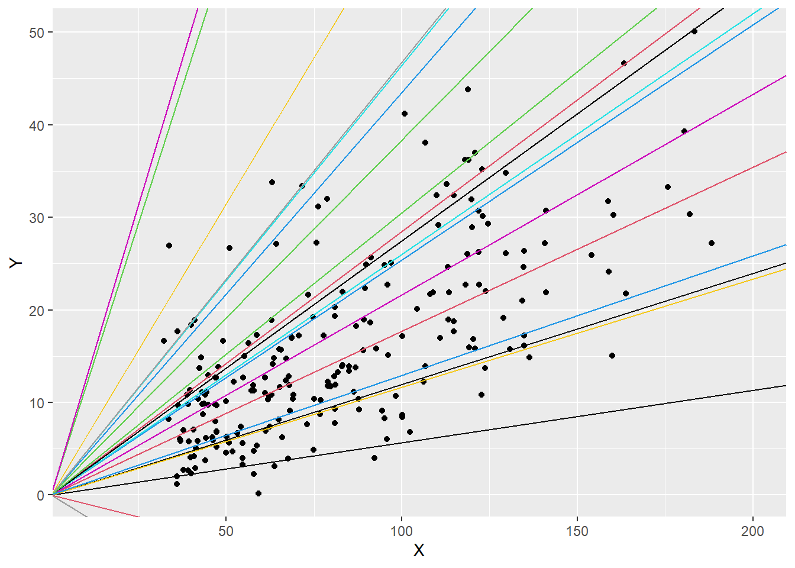
De maneira geral, todas as retas traçadas acertam alguns pontos e erram outros. Há aquelas que se saem melhores e outras que tem um desempenho muito ruim. O que isso demonstra é que encontrar o melhor modelo estatístico para este caso é um problema de otimização. Isso pode ser feito justamente resgatando um pouco o conceito de função de primeiro grau, aprendido no ensino médio:
\[y = a + bX\]
Nesta equação, \(y\) depende de duas constantes e uma variável. As constantes são \(a\), que também é chamada de intercepto ou coeficiente linear e \(b\), que é chamada de inclinação ou coeficiente angular. A variável da equação é apresentada por \(X\). Por uma questão de simbologia, três alterações são feitas com a equação:
Os símbolos são alterados. Agora \(a = b_0\) e \(b = b_1\). A alteração de simbologia não altera em nada os cálculos.
Como se sabe que função vai estimar os valores reais de \(Y\), letras minúsculas ou um chapéu sobre as letras será utilizado em vez das letras maiúsculas ou gregas.
Para que cada valor estimado seja associado a um participante a letra \(i\) será adicionada abaixo do \(y\) e do \(b_1\).
Assim, temos que os valores estimados de y, agora \(\hat{y}\), são obtidos pelo \(b_0\) e \(b_1\):
\[\hat{y}_i = b_0 + b_1X{_1}_i\]
Acredito que fique claro que essa equação possibilitará construir uma reta que minimize os erros e não que os anule totalmente. Ou seja, entre o valor real de y (os pontos que estão no gráfico) e os valores estimados pela equação \(\hat{y}\), haverá sempre uma certa quantidade de erro de estimativa. O erro é simbolizado por \(e_i\), é aleatório e abrange todas as influências no comportamento de Y que não podem ser explicadas linearmente pelo comportamento de X. Além disso, alguns pressupostos estatísticos são impostos a este termo para que as mudanças em X tenham efeito (ceteris paribus) em Y.
É possível agora reescrever a equação anterior, considerando que qualquer que seja o valor estimado, sempre haverá uma quantidade de erro.
\[y_i = a + b_1X{_1}_i+\underbrace{e_i}_\text{aleatório}\]
A melhor reta a ser construída será a que melhor minimize o erro. Por sua vez, os erros se formam pela diferença entre os valores obtidos e previstos.
\[e_i = y_i - \hat{y_i}\] O que é análogo à:
\[e_i = y_i - (b_0 + b_1X{_1}_i) \\ = y_i - b_0 - b_1X{_1}_i\]
O método de Mínimos Quadrados Ordinários (em inglês, Ordinary Least Squares – OLS) é o mais frequentemente utilizado para estimar os valores de \(b_0\) e \(b_1\) que possam minimizar o erro quadrático, chamado de \(SSE\). A intuição de calcular o erro quadrático em vez do absoluto é a de punir mais severamente os desvios grandes.
\[SSE = \sum_{i=1}^n e_i^2 = \sum_{i=1}^n (y_i - b_0 - b_1 X_i)^2\]
Para encontrar o mínimo, é necessário derivar \(SSE\) em relação à \(b_0\) e e \(b_1\) e, em seguida, igualar à 0:
\[\frac{\partial e^2}{\partial b_0} = 0,\\ \frac{\partial e^2}{\partial b_1} = 0\]
Rearrumando um pouco os resultados, eles permitem concluir que a inclinação da reta (slope) é dada por: \[b_1=\frac{\sum\limits_{i=1}^{n} (x_i-\overline{x}) (y_i-\overline{y})}{\sum\limits_{i=1}^{n} (x_i-\overline{x})^2} = \frac{COV(x,y)}{VAR(X)}\]
Enquanto o intercepto é dado por:
\[b_0 = \overline{y} - b_1 \overline{x}\]
Pela forma como são calculados, o \(b_0\) e o \(b_1\) são chamados de estimadores de mínimos quadrados ordinários. O \(b_1\) representa o quanto a média de Y varia para um aumento de uma unidade da variável X. O \(b_0\) indica o ponto onde a reta corta o eixo das ordenadas e pode ser interpretável ou não, tal como descrito no glossário, ao início do capítulo.
Implementando as fórmulas, agora é possível traçar a melhor reta para descrever o relacionamento entre as variáveis, tal como abaixo:
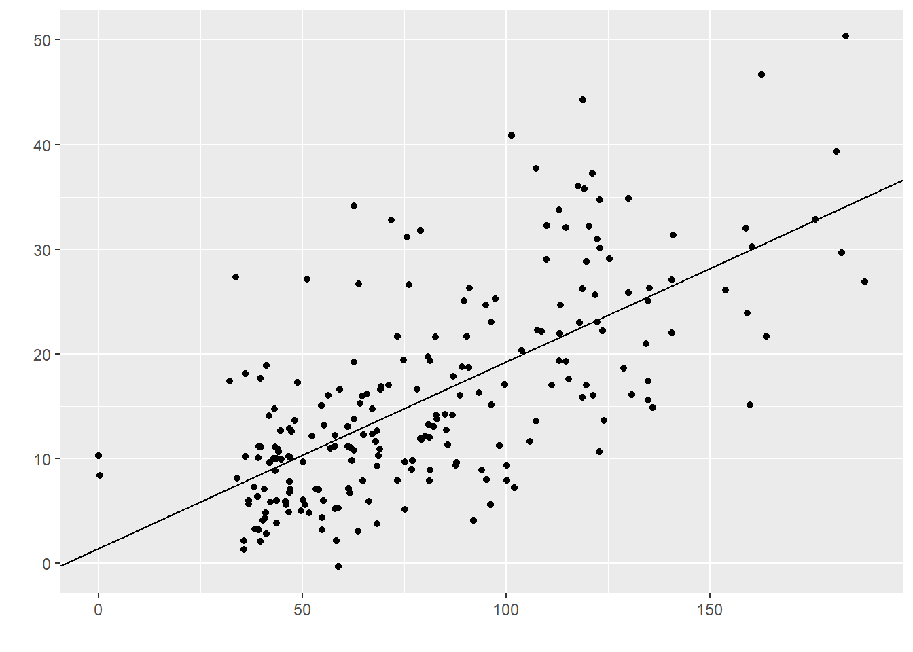
Essa reta passará necessariamente pela média de ambas as variáveis.
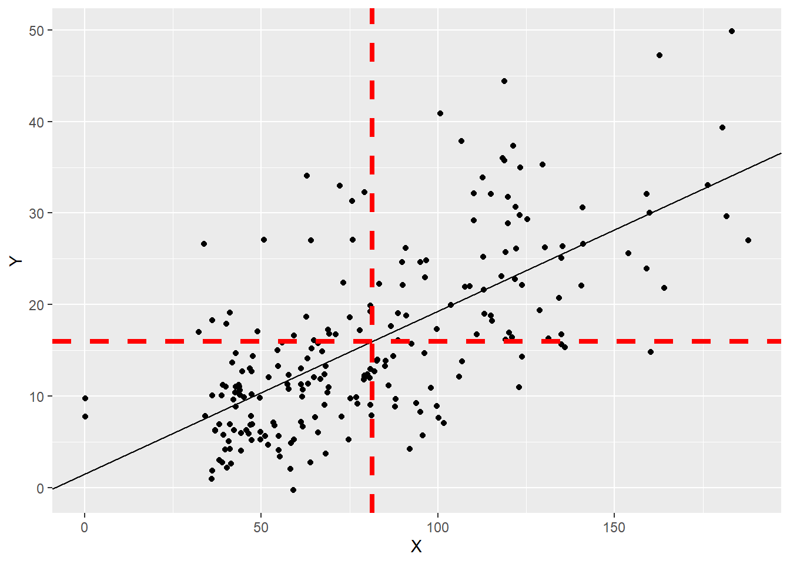
Aproveitando o gráfico, agora é possível apresentar os dados reais, a linha de regressão e as distâncias entre ela e os pontos reais,
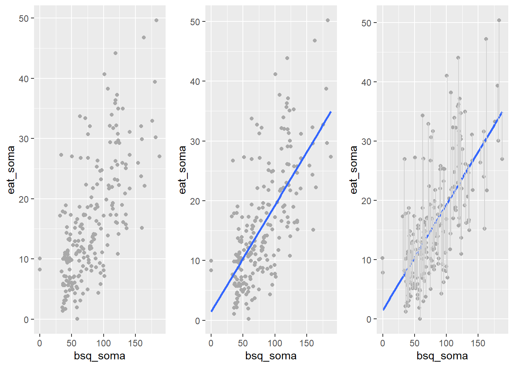
Com esse sistema de equações, é possível verificar que a variabilidade total de Y pode ser descrita por uma parte explicada pelo modelo de regressão e uma parte não explicada. Existem muitas siglas para expressar estes conceitos e aqui vou utilizar a versão em inglês. SST (total sum of squares) se refere à Soma Total dos Quadrados, SSR (regression sum of squares) se refere à Soma dos Quadrados da Regressão e SSE (error sum of squares) se refere à Soma dos Quadrados dos Erros, que é a parte não explicada pelo modelo.
Conceitualmente, isso é descrito da seguinte maneira:
\[\underbrace{\sum\limits_{i=1}^{n} (y_i-\overline{y})^2}_\text{SST} = \underbrace{\sum\limits_{i=1}^{n} (\widehat{y_i}-\overline{y})^2}_\text{SSR} + \underbrace{\sum\limits_{i=1}^{n} (y_1-\widehat{y_i})^2}_\text{SSE}\]
Adicionando as equações ao gráfico, tem-se o seguinte:
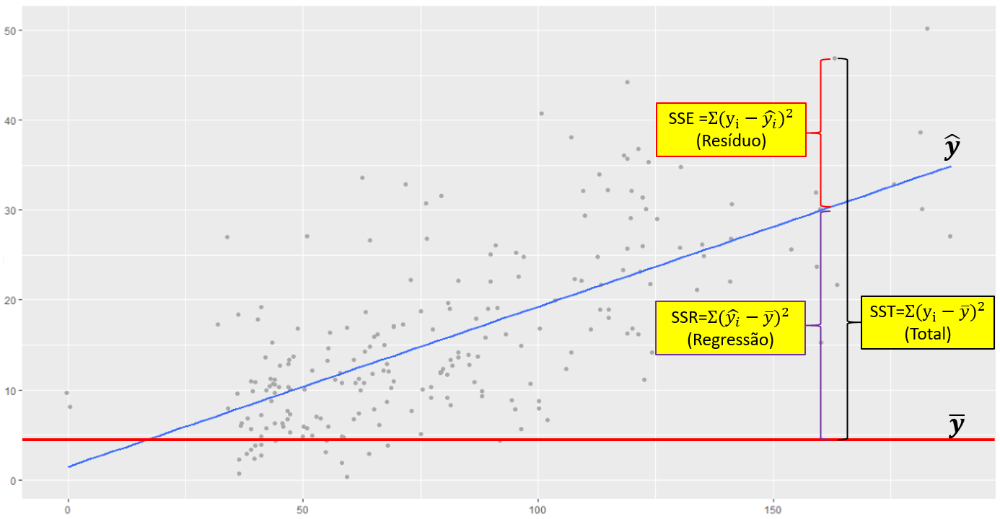
A avaliação deste modelo pode ser feita de maneira análoga ao apresentado anteriormente, em que SSR e SST são divididos e geram um coeficiente de determinação, representado por \(R^2\).
\[R^2=\frac{\sum\limits_{i=1}^{n} (\widehat{y_i}-\overline{y})^2}{\sum\limits_{i=1}^{n} (y_i-\overline{y})^2} = \frac{SSR}{SST}\] Rearrumando a equação, o \(R^2\) também pode ser obtido por:
\[R^2 = 1- \frac{SSE}{SST}\]
Este coeficiente varia entre 0 até 1 e indica a proporção da variação total da variável dependente que pode ser atribuída à variável independente. Ele pode ser utilizado como uma medida da qualidade do ajustamento da reta de regressão aos dados e um indicador da confiança das previsões geradas pelo modelo de regressão.
Isso feito, o sumário de algumas fórmulas fechadas pode auxiliar no entendimento desta modelagem àqueles com este interesse específico.
EQUAÇÕES
Soma dos Quadrados da Regressão: \(SSR = \sum\limits_{i=1}^{n} (\widehat{y_i}-\overline{y})^2\)
Soma dos Quadrados dos Erros: \(SSE = \sum\limits_{i=1}^{n} (y_1-\widehat{y_i})^2\)
Soma dos Quadrados Total: \(SST = \sum\limits_{i=1}^{n} (y_i-\overline{y})^2\)
Variabilidade total: \(SST = SSR + SSE\)
\(R^2= \frac{\sum\limits_{i=1}^{n} (\widehat{y_i}-\overline{y})^2}{\sum\limits_{i=1}^{n} (y_i-\overline{y})^2} = \frac{SSR}{SST} = 1 - \frac{SSE}{SST}\)
\(R^2_{adj}\): \(1-\frac{SSE/N-K}{SST/N-1}\)
É importante destacar que esta introdução é inicial e serve apenas para introduzir as principais ideia da modelagem de regressão de uma maneira intuitiva. Existem excelente obras mais detalhadas e com aplicações à Psicologia, entre elas:
Data Analysis: A Model Comparison Approach To Regression, ANOVA, and Beyond, de Charles M. Judd, Gary H. McClelland e Carey S. Ryan;
Regression, ANOVA, and the General Linear Model": A Statistics Primer, de Paul Vik;
Regression: Linear Models in Statistics e N.H. Bingham e J.M. Fry, e
Regression and Other Stories, de Andrew Gelman
16.2 Pesquisa
A base desta pesquisa está disponível em formato R (Rdata) e em CSV, que é lido pelo JASP. Clique na opção desejada.
Base R: Imagem corporal
Base JASP: Base CSV - csv eat bsq brasil
Neste capítulo, vamos utilizar a pesquisa intitulada “Aspects Related to Body Image and Eating Behaviors in Healthy Brazilian Undergraduate Students”, publicada em 2018 no Global Journal of Educational Studies, que sou coautor.
O objetivo dessa pesquisa foi explorar os fatores envolvidos em transtornos alimentares e na percepção da imagem corporal. Os primeiros aspectos foram avaliados pela escala EAT-26, enquanto o segundo foi avaliado pela escala BSQ-34.
Uma das principais hipóteses era que alterações na percepção da imagem corporal seriam preditores para possíveis transtornos alimentares. Operacionalmente, a hipótese era de que os valores da BSQ-34 poderiam predizer os valores da EAT-26 e que quão maior fossem os primeiros, maior seriam os efeitos na maximização dos segundos.
Em modelos de regressão, as hipóteses costumam ser feitas em cascata. Quase sempre, se compara o modelo de desenvolvido com um modelo mais simples. Em seguida, verifica-se cada preditor de forma individual e assim sucessivamente. Uma vez que a definição de cada hipótese ocuparia um espaço grande aqui, elas serão suprimidas.
16.3 Execução no R
Inicialmente, é necessário carregar a base no R. Após isso, a primeira etapa analítica é realizada pela criação de tabelas e gráficos. Ambas as apresentações são importantes e oferecem um auxilio à interpretação dos resultados. De maneira similar à feita em outros capítulos, abaixo há uma tabela descritiva feita com o pacote arsenal.
arsenal::tableby(~eat_soma + bsq_soma, dados_brasil) %>%
summary() | Overall (N=220) | |
|---|---|
| eat_soma | |
| Mean (SD) | 15.950 (9.753) |
| Range | 0.000 - 50.000 |
| bsq_soma | |
| Mean (SD) | 81.359 (37.003) |
| Range | 0.000 - 188.000 |
O cálculo da correlação entre ambas as variáveis também é importante, apesar de tecnicamente não ser necessário neste capítulo. Em linhas gerais, o coeficiente de correlação expressa a força e a direção do relacionamento entre as variáveis. A força pode ser interpretada como fraca (0.1), moderada (0.3) ou forte (0.5) (J. Cohen, 1988) e a direção pode ser positiva ou negativa, a depender do sinal. A correlação entre as variáveis foi 0.675 e significativa (p < 0.001).
cor.test(dados_brasil$eat_soma, dados_brasil$bsq_soma) %>%
pander()| Test statistic | df | P value | Alternative hypothesis | cor |
|---|---|---|---|---|
| 13.52 | 218 | 1.156e-30 * * * | two.sided | 0.6754 |
O gráfico de dispersão apresenta esse relacionamento. No eixo X deve-se inserir a VI (neste caso, os resultados da BSQ-34), enquanto a VD é inserida em Y.
ggplot(dados_brasil, aes(x = bsq_soma, y = eat_soma)) +
geom_jitter()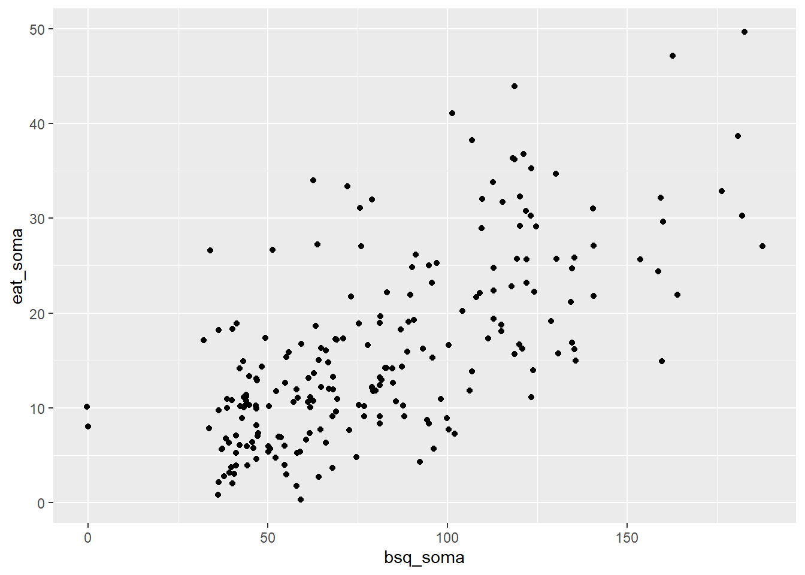
Tanto a tabela como o gráfico deixam claro que existe um padrão (aproximadamente linear) entre ambas as variáveis que ocorre de maneira forte e significativa. Com isso, é natural que o interesse seja verificar o quanto os resultados do EAT-26 variam em função do BSQ-34.
Para executar esse procedimento, o R conta com a função nativa lm. Por sua vez, o pacote olsrr oferece excelentes complementos para interpretar os achados. O vetor mod_linear_simples será criado e armazenará os resultados. Lembre-se que, no R, é importante sempre atentar para o nível de medida das variáveis para que os resultados sejam adequados.
mod_linear_simples <- lm(eat_soma ~ bsq_soma, data = dados_brasil)Na maioria dos programas comerciais, os resultados do modelo de regressão são apresentados em uma tabela padronizada. Essa tabela é virtualmente idêntica à que foi exposta no capítulo sobre a ANOVA de uma via e encontra-se abaixo descrita:
| Fonte de variação | SS | df | MS | F-Value | P-Value |
|---|---|---|---|---|---|
| Regressão | SSR (Regressão) | K-1 | MSR | SSR/K-1 | MSR/MSE |
| Erro | SSE (Erro) | N-K | MSE | SSE/N-K | – |
| Total | SST (Total) | N-1 | – | – | – |
| R2 = SSR/SST |
Nota: Nessa tabela, K considera dois preditores na regressão, que são o intercepto e a inclinação. É possível também encontrar N-K-1 em alguns livros que não explicitam o intercepto na tabela.
Isto explicado, a função ols_regress do pacote olsrr dispoõe os resultados neste padrão:
ols_regress(mod_linear_simples) ## Model Summary
## --------------------------------------------------------------
## R 0.675 RMSE 7.209
## R-Squared 0.456 Coef. Var 45.196
## Adj. R-Squared 0.454 MSE 51.966
## Pred R-Squared 0.445 MAE 5.565
## --------------------------------------------------------------
## RMSE: Root Mean Square Error
## MSE: Mean Square Error
## MAE: Mean Absolute Error
##
## ANOVA
## -----------------------------------------------------------------------
## Sum of
## Squares DF Mean Square F Sig.
## -----------------------------------------------------------------------
## Regression 9503.775 1 9503.775 182.883 0.0000
## Residual 11328.675 218 51.966
## Total 20832.450 219
## -----------------------------------------------------------------------
##
## Parameter Estimates
## --------------------------------------------------------------------------------------
## model Beta Std. Error Std. Beta t Sig lower upper
## --------------------------------------------------------------------------------------
## (Intercept) 1.466 1.176 1.246 0.214 -0.852 3.784
## bsq_soma 0.178 0.013 0.675 13.523 0.000 0.152 0.204
## --------------------------------------------------------------------------------------É fácil notar que os resultados apresentados são muitos e se recomenda uma ordem específica para interpretá-los.
Em primeiro momento, é necessário verificar o ajuste do modelo na seção ANOVA. Este teste compara o modelo em questão contra um modelo em que apenas o intercepto é utilizado para prever todos os valores. Tecnicamente, o modelo analisado é chamado de irrestrito (ou aumentado) e o modelo que tem apenas o intercepto é chamado de restrito ou nulo. Valores significativos são necessários nesta etapa. Nesta análise, o resultado foi F(1, 218) = 182.883, p < 0.0001, indicando que os outros resultados podem ser interpretados.
O segundo momento é a interpretação do \(R^2\). Como exposto no início do capítulo, esse indicador mensura a parte da variação da variável dependente (Y) que pode ser atribuída às variáveis independentes do modelo (X). Repare que ele é computado pela razão entre o SSR e o SST e indica que cerca de 46% dos resultados da variabilidade do EAT-26 podem ser explicados pelo modelo.
O terceiro momento é a análise do \(R^2 ajustado\). Em modelos de regressão, modelos com mais parâmetros/preditores sempre vão ter \(R^2\) maior do que modelos mais compactos, independente da significância destes outros parâmetros. O \(R^2 ajustado\) é uma medida que considera a complexidade do modelo e pune a entrada de novas variáveis. Neste caso, como há apenas dois preditores (intercepto e bsq_soma), o \(R^2 ajustado\) e o \(R^2\) são quase idênticos.
Finalmente, o quarto momento é análise dos preditores, que é feito na seção Parameter Estimates. Para isso, deve-se identificar os preditores um a um, seus valores de Beta e de P (Sig). O Beta indica a diferença média em unidades da variável dependente quando se altera uma unidade de X. Por exemplo, mais 1 ponto no BSQ-34, mais 0.178 pontos, em média, no EAT-26. Esse resultado é significativo, tal como é indicado na coluna Sig.
O intercepto é chamado de constante na maior parte dos programas e indica o valor médio (esperado) de Y quando X=0. Nesse caso, se alguém tivesse tirado o valor 0 na escala BSQ-34, o valor previsto para os resultados da Escala EAT-26 seria de 1.46. No entanto, o Sig indica que esse valor não é significativo, ou seja, não é diferente de 0. O indicador de beta padronizado Std. Beta traz as mesmas informações, mas trabalha em unidades de desvios-padrão em todas as variáveis presentes no modelo. Eventualmente, o Std. Beta pode ser entendido como uma medida preliminar de tamanho do efeito (Fox, 2016).
É importante notar que frequentemente o intercepto não tem interpretação lógica e, por isso, costuma ser desconsiderado. Para que ele tenha melhor capacidade de interpretação, algumas estratégias são possíveis, tal como centralizar os valores do preditor \((x_i-\bar{x})\). Caso isso seja feito, o intercepto irá ser o valor médio da variável dependente.
Estes resultados obtidos são muito auxiliados pela apresentação de gráficos de dispersão, tal como feito no início do capítulo. Entretanto, agora estes gráficos ganham dois elementos a mais: (1) uma reta de regressão, obtida pela Função de Regressão Amostral (FRA), que irá indicar o intercepto, a inclinação e o intervalo de confiança das estimativas e (2) uma indicação textual com as equações características do modelo e seus respectivos resultados. Essas adições gráficas são feitas pelo pacote ggpubr.
ggplot(dados_brasil, aes(x = bsq_soma, y = eat_soma)) +
geom_jitter() + geom_smooth(method = "lm") +
ggpubr::stat_regline_equation(label.x = 3, label.y = 40) +
ggpubr::stat_cor(aes(label = ..rr.label..), method = "pearson",
label.x = 3, label.y = 44)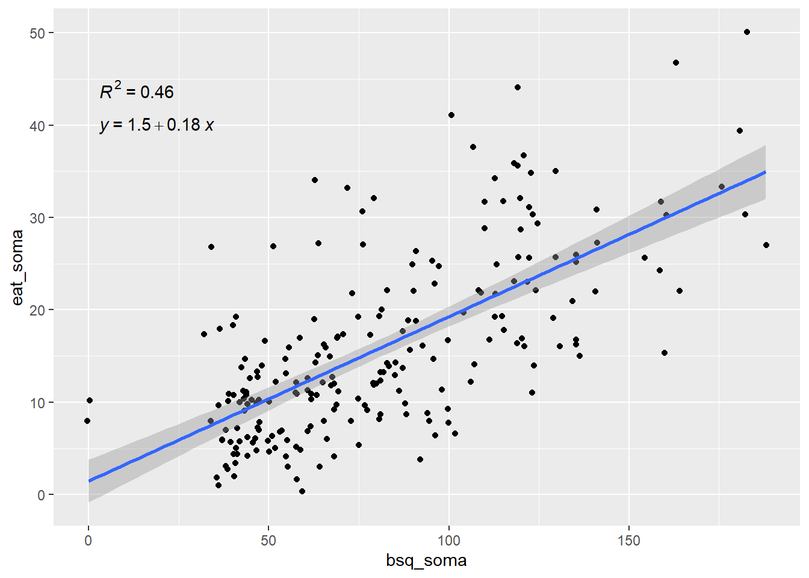
Uma vez que o modelo já foi realizado, a interpretação dos resultados depende da adequação de seus pressupostos. A violação destes pressupostos distorce, limita ou invalida as interpretações teóricas propostas, uma vez que tanto o aumento do erro do tipo 1 (falso positivo), como do tipo 2 (falso negativo) podem ocorrer (Barker & Shaw, 2015; Ernst & Albers, 2017; Lix et al., 1996). Corriqueiramente, testar os pressupostos é uma etapa anterior à própria realização do teste inferencial. Entretanto, pedagogicamente a apresentação deles após a execução do teste parece mais adequada. Assim, eles serão testados a seguir.
Normalidade: O pressuposto da Normalidade é atendido se os resíduos do modelo de regressão seguirem uma distribuição normal. Isso pode ser avaliado graficamente por QQ plots e também por testes específicos, como o Shapiro-wilk, Anderson-Darling e Jarque Bera.
O QQ plot é um gráfico que reúne a distribuição empírica ordenada dos quantis contra os quantis da distribuição teórica (aqui, normal). Se os dados e a linha diagonal se sobrepuserem, isso é uma evidencia de que a distribuição empírica é a mesma da distribuição teórica. Caso haja discrepância, isso aponta para desvio da normalidade. Caso os pontos e a reta diagonal estejam superpostos, se considera que este pressuposto foi atendido.
ols_plot_resid_qq(mod_linear_simples)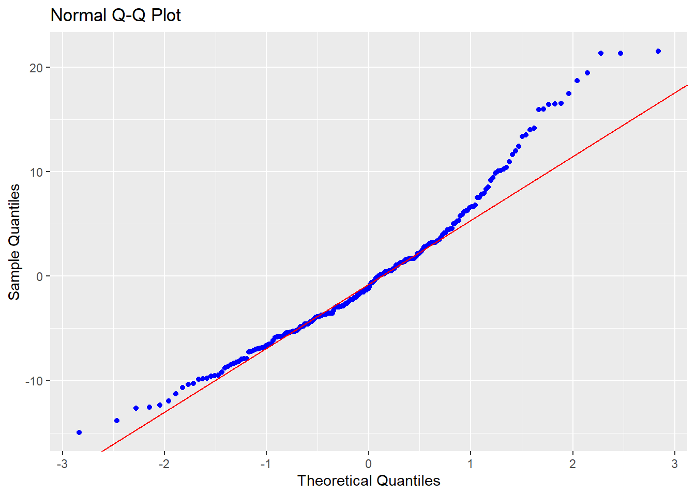
Testes estatísticos formais também podem ser utilizados, tal como abaixo:
ols_test_normality(mod_linear_simples)## -----------------------------------------------
## Test Statistic pvalue
## -----------------------------------------------
## Shapiro-Wilk 0.9597 0.0000
## Kolmogorov-Smirnov 0.0816 0.1072
## Cramer-von Mises 17.066 0.0000
## Anderson-Darling 2.4137 0.0000
## -----------------------------------------------Apesar dos resultados obtidos por tais testes serem algo discordantes, os achados sugerem violação deste pressuposto.
Homocedasticidade: Este pressuposto de variâncias constantes pode ser analisada em um gráfico de dispersão dos resíduos (residual) contra os valores previstos (fitted).
ols_plot_resid_fit(mod_linear_simples)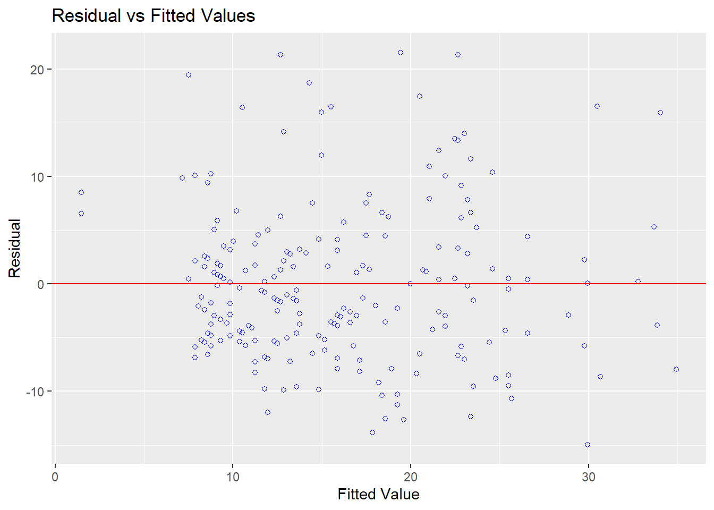
Caso haja padrões neste gráfico, isso sugere que este pressuposto foi violado. O gráfico não sugere padrões específicos. No entanto, testes formais são recomendados para que a decisão tomada tenha maior apoio. Existem diferentes testes para isso e, entre eles, o teste de Bartlett, Levene e Breusch-Pagan. Os resultados dependem das propriedades de cada um dos modelos e, em função da praticidade computacional, o teste de Breusch-Pagan será utilizado. Em todos estes testes, a hipótese nula assume homocedasticidade. Portanto, a estatística de teste não deveria ser significativa para que a homocedasticidade fosse apoiada.
ols_test_breusch_pagan(mod_linear_simples)##
## Breusch Pagan Test for Heteroskedasticity
## -----------------------------------------
## Ho: the variance is constant
## Ha: the variance is not constant
##
## Data
## ------------------------------------
## Response : eat_soma
## Variables: fitted values of eat_soma
##
## Test Summary
## ------------------------------
## DF = 1
## Chi2 = 9.002614
## Prob > Chi2 = 0.002695937Os resultados indicaram que a homocedasticidade foi violada. Isso vai na direção oposta da percepção gráfica, o que pode ocorrer sem nenhum problema.
Independência: A independência dos resíduos depende bastante do delineamento utilizado ser transversal ou longitudinal. O teste de Durbin Watson pode ser utilizado e sua hipótese nula é de que os resíduos não são correlacionados. Este pressuposto foi atendido, o que já era esperado.
car::durbinWatsonTest(mod_linear_simples)## lag Autocorrelation D-W Statistic p-value
## 1 0.07254389 1.845067 0.232
## Alternative hypothesis: rho != 0Isso posto, os diagnósticos executados indicaram que o modelo violou a normalidade e a homocedasticidade e preservou a linearidade e a independência dos resíduos. Apesar desse tipo de resultado ser frequente em Psicologia, a interpretação dos resultados é limitada e deve ser feita de forma apenas preliminar.
16.4 Execução no JASP
Para executar as rotinas necessárias, será necessário carregar a base de dados para o ambiente JASP. A base chama-se “csv eat bsq brasil.” Após fazer isso, para realizar tabelas e gráficos descritivos, deve-se clicar em Descriptives , na parte superior do programa.

Ao clicar nesta opção, será possível eleger as variáveis que irão ser analisadas e as variáveis que irão funcionar como agrupadores. Neste caso, será necessário colocar o bsq_soma e o eat_soma na seção Variables. É importante manter essa ordem para as apresentações gráficas futuras.
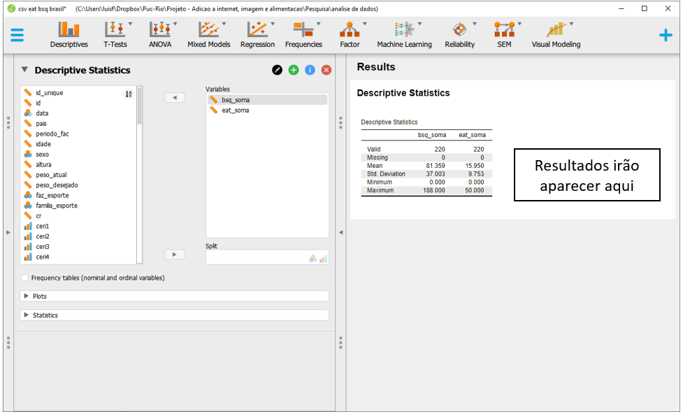
Ao fazer isso, automaticamente o JASP apresentará as médias e desvios-padrão de cada uma das variáveis, além de valores mínimos e máximos. Para realizar um gráfico que descreva o relacionamento entre ambas as variáveis, é necessário clicar em Plots.
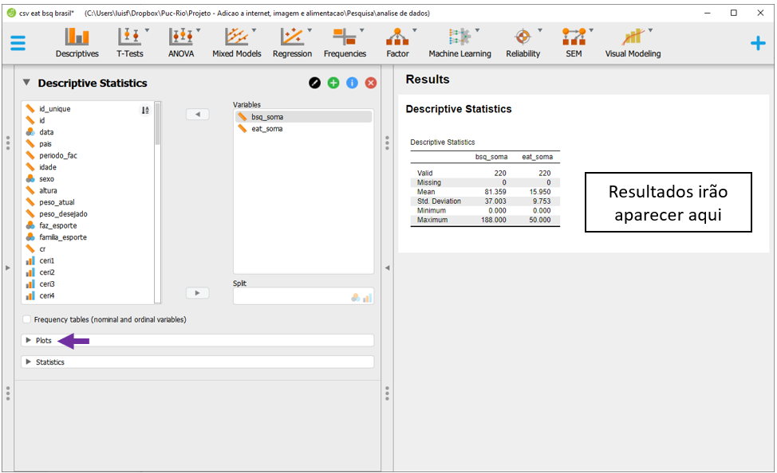
Há diversas opções, mas a Scatter Plots é a mais completa. Ao selecioná-la, o JASP já irá apresentar o gráfico, bem como adicionar elementos que possam maximizar o entendimento do relacionamento entre elas. A este momento, o interesse é fazer uma primeira avaliação sobre o perfil linear no relacionamento entre os dados, o que parece ocorrer.
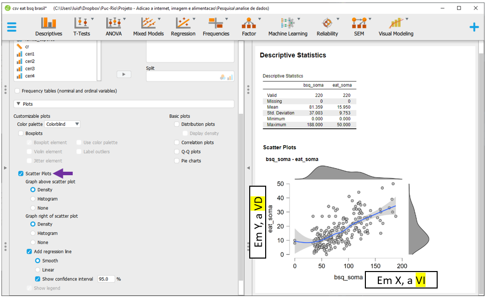
É possível calcular a correlação entre ambas as variáveis, tal como foi realizado no R. Entretanto, essa etapa reproduziria o que foi feito no capítulo anterior e, por isso, não será apresentada.Para execução da regressão linear, será necessário clicar em Regression e Linear Regression.

A tela do JASP irá apresentar algumas opções. É importante notar que a Covariates é o local onde as VIs serão colocadas e Dependent Variable é onde a VD deverá ser inserida. Enquanto é possível inserir muitas variáveis independentes (fazendo um modelo múltiplo), apenas uma VD poderá ser inserida. O JASP apenas aceitará variáveis contínuas ou definidas como contínuas nos espaços apresentados.

Para realizar o modelo, será necessário levar a bsq_soma para seção Covariates e a eat_soma para Dependent variable. Ao fazer isso, o JASP irá fazer todas as principais análises e apresentar os resultados em uma tabela específica, ao lado direito da tela. É fácil notar que os resultados apresentados são muitos e se recomenda uma ordem específica para interpretá-los.
Em primeiro momento, é necessário verificar o ajuste do modelo na seção ANOVA, bem ao centro dos resultados. Este teste compara o modelo em questão contra um modelo em que apenas o intercepto é utilizado para prever todos os valores. No JASP, esses modelos são descritos por H1 e H0 nas principais tabelas. Tecnicamente, o modelo analisado é chamado de irrestrito (ou aumentado, H1) e o modelo que tem apenas o intercepto é chamado de restrito ou nulo, H0. Valores significativos são necessários nesta etapa. Nesta análise, o resultado foi F(1, 218) = 182.883, p < 0.0001, indicando que os outros resultados podem ser interpretados. Quando isso acontece, deve-se desconsiderar todas as linhas que o JASP apresentar resultados para o modelo nulo, simbolizado porH0, e apenas interpretar os resultados do modelo testado, que é apresentado sempre por H1.
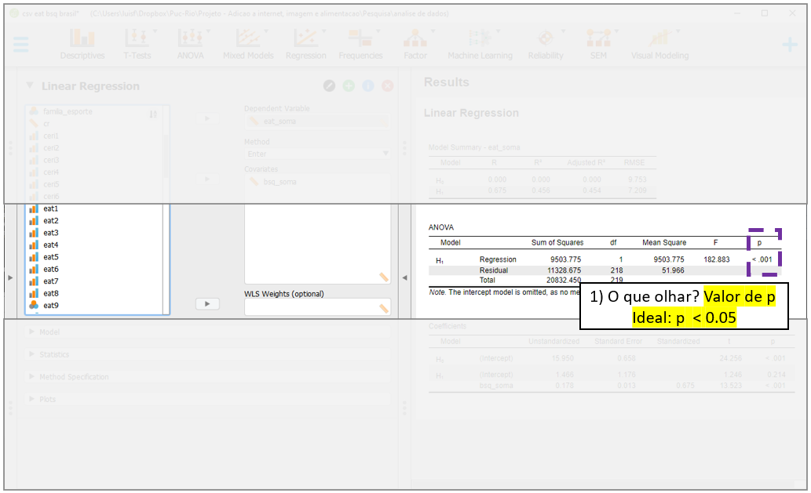
O segundo momento é a interpretação do \(R^2\), que está localizado na parte superior, em Model summary. Como exposto no início do capítulo, essa indicador mensura a parte da variação da variável dependente (Y) que pode ser atribuída às variáveis independentes do modelo (X). Repare que ele é computado pela razão entre o SSR e o SST e indica que cerca de 46% dos resultados da variabilidade do EAT-26 podem ser explicados pelo modelo.
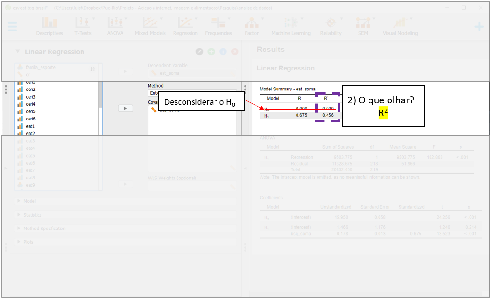
O terceiro momento é a análise do \(R^2 ajustado\), que também está localizado na parte superior, em Model summary. Em modelos de regressão, modelos com mais parâmetros/preditores sempre vão ter \(R^2\) maior do que modelos mais compactos, independente da signficância destes outros parâmetros. O \(R^2 ajustado\) é uma medida que considera a complexidade do modelo e pune a entrada de novas variáveis. Neste caso, como há apenas dois preditores (intercepto e bsq_soma), o \(R^2 ajustado\) e o \(R^2\) são quase idênticos.
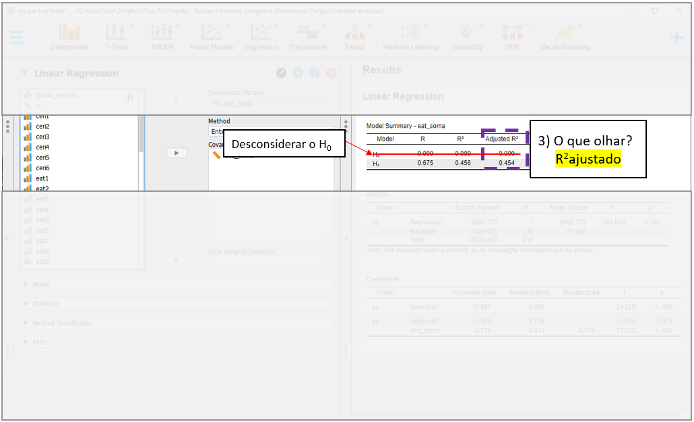
Finalmente, o quarto momento é análise dos preditores, que é feito na seção Coefficients. Para isso, deve-se identificar os preditores um a um, seus valores Unstandardized e de P. O Unstandardized indica a diferença média em unidades da variável dependente quando se altera uma unidade de X. Por exemplo, mais 1 ponto no BSQ-34, mais 0.178 pontos, em média, no EAT-26. Esse resultado é significativo, tal como é indicado na coluna Sig.
O intercepto é chamado de constante na maior parte dos programas e indica o valor médio (esperado) de Y quando X=0. Nesse caso, se alguém tivesse tirado o valor 0 na escala BSQ-34, o valor previsto para os resultados da Escala EAT-26 seria de 1.46. No entanto, o Sig indica que esse valor não é significativo, ou seja, não é diferente de 0. O indicador de beta padronizado Standardized traz as mesmas informações, mas trabalha em unidades de desvios-padrão em todas as variáveis presentes no modelo. Eventualmente, o Standardized pode ser entendido como uma medida preliminar de tamanho do efeito (Fox, 2016).
É importante notar que frequentemente o intercepto não tem interpretação lógica e, por isso, costuma ser desconsiderado. Para que ele tenha melhor capacidade de interpretação, algumas estratégias são possíveis, tal como centralizar os valores do preditor \((x_i-\bar{x})\). Caso isso seja feito, o intercepto irá ser o valor médio da variável dependente.
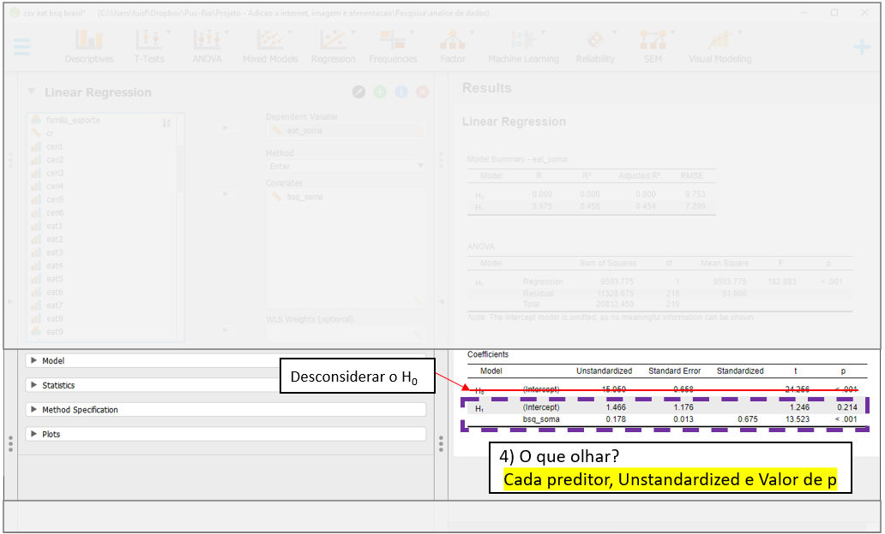
Em síntese, cada uma das etapas deve ser feita de maneira sequencial. A imagem a seguir apresenta um sumário com todos os passos expostos.
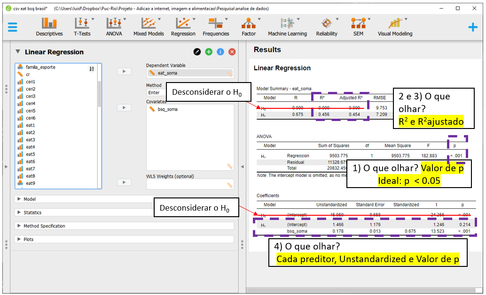
Uma vez que o modelo já foi realizado, a interpretação dos resultados depende da adequação de seus pressupostos. A violação destes pressupostos distorce, limita ou invalida as interpretações teóricas propostas, uma vez que tanto o aumento do erro do tipo 1 (falso positivo), como do tipo 2 (falso negativo) podem ocorrer (Barker & Shaw, 2015; Ernst & Albers, 2017; Lix et al., 1996). Corriqueiramente, testar os pressupostos é uma etapa anterior à própria realização do teste inferencial. Entretanto, pedagogicamente a apresentação deles após a execução do teste parece mais adequada. Assim, eles serão testados a seguir.
Para verificar os pressupostos, será necessário utilizar as opções dispostas na parte inferior à esquerda do programa.
A normalidade é testada ao clicar em Plots e Q-Q plot standardized results. O JASP irá apresentar um QQ plot com duas informações principais: uma diagonal e um conjunto de pontos/círculos. Caso os círculos estejam sobrepostos à linha, isso apoia que os resíduos se distribuem normalmente. No caso abaixo, isso não foi alcançado.
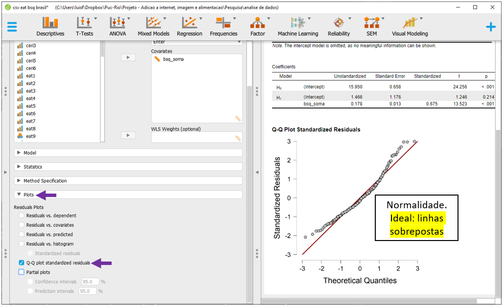
Diferente do R, esta versão do JASP não permite testar formalmente a hipótese de normalidade residual. Dessa forma, será necessário contar apenas com a perceção do gráfica para checar se o pressuposto foi respeitado ou violado.
A homocedasticidade é também verificada graficamente. Ao clicar no Residuals vs. Predicted, o plano irá apresentar os valores dos resíduos em Y e os valores previstos em X. Nesse gráfico, é importânte não detectar nenhum padrão nos elementos apresentados. A disposição do gráfico indica que este pressuposto foi alcançado.
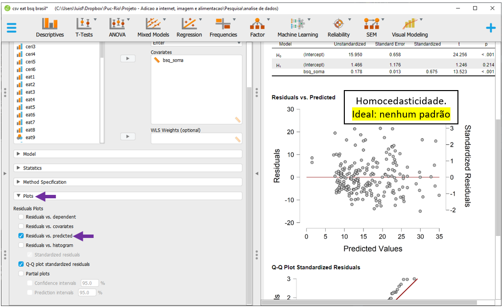
A Independência dos resíduos é bastante dependente do tipo de delineamento utilizado. No entanto, o JASP permite que esse pressuposto seja formalmente testado pelo teste de Durbin Watson. Isso é feito ao clicar em Statistics, Residuals e Durbin-Watson
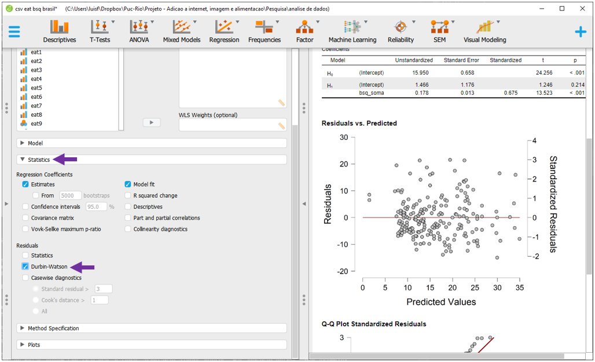
Os resultados irão ser apresentados na parte superior do programa. Caso a hipótese nula não seja rejeitada, isso apoia que os resíduos são independentes. Nesse caso, o valor de p foi 0.242, indicando que isso ocorreu.
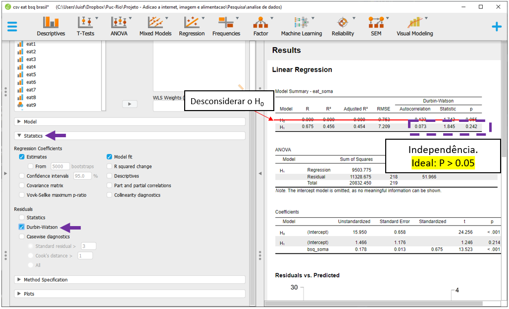
Uma vez que nem todos os pressupostos foram atendidos, é possível proceder a algumas alterações na modelagem estatística ou, realizar a interpretação cautelosa dos resultados. Neste capítulo, a interpretação será feita.
16.5 Escrita dos resultados
De uma forma geral, o principal achado do modelo de regressão é que a percepção da imagem corporal é um preditor significativo ao comportamento alimentar. Neste sentido, ao saber informações sobre como uma pessoa percebe o próprio corpo, pode-se estimar condições eventualmente disfuncionais de seu comportamento alimentar. Abaixo uma sugestão de escrita baseada nas recomendações da American Psychological Association (APA).
Como escrever os resultados
Um modelo de regressão foi calculado para verificar os resultados dos comportamentos alimentares (EAT-26) em função da percepção de imagem corporal (BSQ-34). Os resultados indicaram que cerca de 46% da variância do EAT-26 pode ser atribuída ao BSQ-34 (R2 = 0.456, F(1,218) = 182.88, p < 0.001). Cada ponto a mais no BSQ-34 impacta, em média, em 0.178 no EAT-26 (b = 0.178, p < 0.001).
16.6 Resumo
- Existem diferentes modelos de regressão.
- O tipo de regressão depende tanto da natureza e quantidade das VIs e VDs.
- Grande parte dos testes estatísticos estudados em estatística inferencial são casos particulares dos modelos de regressão.
- A principal proposta dos modelos de regressão é prever/explicar um resultado a partir de uma ou um conjunto de variáveis.
- Os principais indicadores de um modelo de regressão são sua significância geral, o \(R^2\),o o \(R^2_{adj}\), bem como o coeficiente e a significância dos preditores.
- o diagnóstico é uma parte essencial desta modelagem e o mnemônico LINE pode ajudar na lembrança dos pressupostos.
16.7 Pesquisas adicionais
- Influence of Age and Education on the Performance of Elderly in the Brazilian Version of the Montreal Cognitive Assessment Battery (DOI: 10.1159/000489774)
Nesta pesquisa, 110 participantes foram recrutados para que os pesquisadores pudessem produzir tabelas estatísticas para um novo exame neuropsicológico. Uma das análises feitas verificou o impacto dos anos de estudo no desempenho neste exame neuropsicológico, concluindo pelo seu efeito protetivo.
16.8 Questões
- (Retirado de Biologia, Metodologia Científica, Biólogo, UFFS, FEPESE, 2012) Sobre Bioestatística, Regressão Linear e Correlação, assinale a alternativa correta.
a) O coeficiente de correlação mede a força, ou grau, de relacionamento entre duas variáveis.
b) O coeficiente de regressão simples descreve o relacionamento, em termos matemáticos, de duas ou mais variáveis.
c) Em um diagrama de dispersão, duas variáveis são plotadas usando-se coordenadas x e y. Os pontos ligados formando uma linha curva não apontam correlação entre as duas variáveis.
d) A finalidade de uma equação de regressão seria calcular acuradamente os valores de uma variável, com base em valores conhecidos da outra.
e) A determinação da correlação entre duas variáveis, por meio de uma inspeção nos pares anotados ou no diagrama de dispersão correspondente, é precisa e independe do treinamento e da sensibilidade do observador.
Gabarito: 1-a